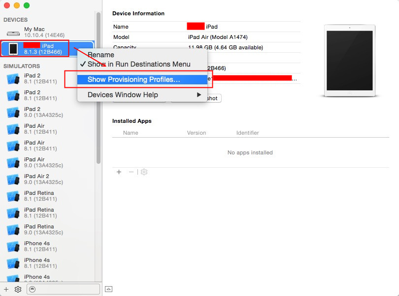

Xcode 7真机测试详解
1.准备
注意：一定要让你的真机设备的系统版本和app的系统版本想对应，如果不对应就会出现一个很常见的问题：could not find developer disk image
首先，准备好下面的设备机相关软件
- MAC版本：OSX10.10.4
- Xcode版本：Xcode7 beta5（点击下载）
- 真机设备：iPad Air(iOS 8.1.3)／iphone 6
2.首先先安装Xcode7，并且运行Xcode，点击左上角菜单Xcode -> Preferences。
3.设置好版本
4.下载好相应的SDK，也可以网上下了放进去，Xcode太慢了要5小时左右。
5.点击Accounts，然后点下面的+号，在弹出菜单中点击Add Apple ID。
6.在弹框中输入账号和密码，普通账号就行不需要开发者账号，然后点击Add。
7.如果账号密码正确的话，会显示如下图。Free表示未付费但可免费调试，双击打开。

8.在打开的列表中选择 iOS Development->点击Create。
9.如下图所示，然后点击Done关闭
10.点菜单栏上Window->Devices。同时将iPad接到电脑。
11.在iPad弹出的对话框中选信任，然后出现如下图所示，连上后关闭窗口
12.打开或者新建一个项目，将项目中iOS Deployment Target中改成iPad对应的系统版本。
13.选择真机测试（如果为灰色说明版本不对需降低版本）

14.然后点Team。
15.选择刚刚添加的账号
16.然后点击Fix Issue
17.xcode会自动生成Provisioning profiles
18.点击菜单Xcode -> Preferences。
19.双击进入
20.选中刚才的项目，右击然后点击Show in Finder。
21.然后双击，文件会自动安装，回到原处后点击Done关闭
22.点击菜单Window -> Devices。
23.选择iPad右击，然后点击Show Provisioning Profiles。

24.看到项目后，点击Done关闭
25.点击运行

运行之后就会在真机上显示对应的App界面

下面会总结一些关于Xcode7常见错误机各种坑的解决方案！
1:我需要安装最新的iOS9 beta/OSX EI Capitan 才能真机调试吗？
-
- 苹果手机不用升级最新版本，不过好像Xcode7 只能在最新的系统上运行（可能需要升级，根据自己的版本号来决定）
2：选择好账号后，点击“Fix Issue”出现入校错误： 
3：连接真机“Could not find Developer Disk Image"提示“这就是嘴开始的时候提到的一个重要的错误
-
- 这是由于xcode7 里面没有 ios 8.4 导致8.4系统下的手机出现该问题
-
- 在“/Applications/Xcode-beta.app/Contents/Developer/Platforms/iPhoneOS.platform/DeviceSupport”里列出了Xcode7.0beta支持的设备
-
- 我们可以下载IOS8.4 将它放在上面的目录中。
- 下载地址：http://download.csdn.net/detail/a892445213/8867693
4：友盟或shareSDK中bitcode 报错？
-
- 可以在 build setting 中，搜索bitcode,并吧 enable bitcode 设置为 NO